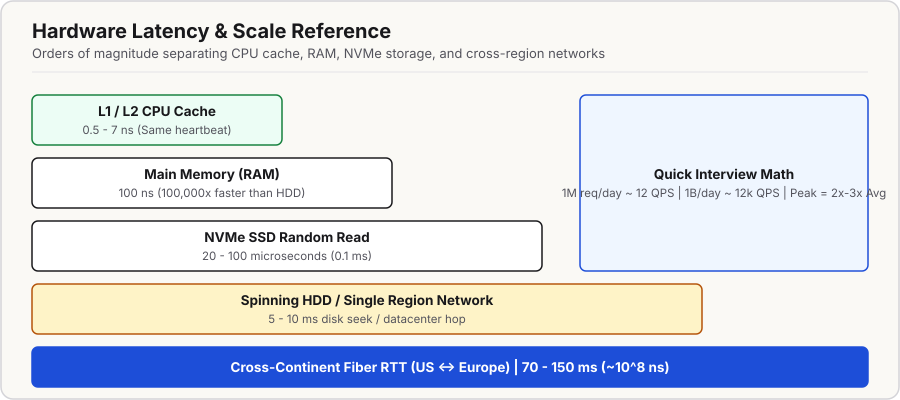

27 · Back-of-the-Envelope Estimation
Part 0 · Foundations · ⏱️ ~20 min read · Prerequisites: None (Foundational)
🏢 Real-world case studies: how Google (Jeff Dean's latency rules) & Netflix (capacity planning for 260M subscribers) execute real-world estimations, in REAL_WORLD_EXAMPLES.md.
🧒 The 30-second version
Back-of-the-envelope estimation is the art of rapidly calculating system scale (QPS, memory, disk storage, network bandwidth) before writing a single line of architecture. It is not about finding the exact decimal; it is about finding the order of magnitude (10 RPS vs 10,000 RPS; 10 GB vs 10 TB).
- Powers of 10 shortcuts:
- 1 Million requests/day ≈ 12 requests/second (RPS).
- 1 Billion requests/day ≈ 12,000 RPS.
- Peak traffic is typically estimated at 2× average.
- Hardware Latency Reality: Reading from RAM (≈ 100 ns) is 100,000 times faster than reading from a spinning disk (≈ 10 ms) and 1,500,000 times faster than a cross-ocean network round trip (≈ 150 ms).
🍕 Everyday analogy: Planning a Wedding Banquet
Imagine planning a wedding:
- You don't need to know if Uncle Bob eats exactly 412 grams or 420 grams of chicken.
- You estimate: "150 guests × 1 main dish ≈ 150 meals. Plus 20% buffer for hungry eaters ≈ 180 portions."
- If your rough estimate said 150 portions and you prepared for 15, your guests starve. If you prepared for 15,000, food rots and you go bankrupt.
Back-of-the-envelope estimation gives you the exact ballpark to pick the right server size, database tier, and caching budget.
🧩 The Problem It Solves
Without back-of-the-envelope estimations:
- Architectural Over-Engineering: A candidate proposes a multi-datacenter Kafka cluster with Cassandra sharding for a service receiving 5 requests/minute.
- Catastrophic Under-Provisioning: A team provisions a standard <span class="math-inline">20/mo SQL database for a service expected to ingest50\text{ GB of telemetry logs per second}$, causing Day 1 production crashes.
- Interview Disqualification: Top-tier tech companies (Google, Meta, Amazon) explicitly score candidates on whether they can calculate QPS, storage growth, and RAM sizing in under 3 minutes.
🔢 The Cheat Sheet: Powers of 2 & 10

| Power of 2 | Exact Bytes | Approximate (Powers of 10) | Standard Unit | Real-World Context |
|---|---|---|---|---|
| 210 | 1,024 | 1 Thousand (103) | 1 KB | Small JSON API response |
| 220 | 1,048,576 | 1 Million (106) | 1 MB | High-res thumbnail / photo |
| 230 | 1,073,741,824 | 1 Billion (109) | 1 GB | 1 hour of SD video stream |
| 240 | 1,099,511,627,776 | 1 Trillion (1012) | 1 TB | Standard server NVMe SSD |
| 250 | 1,125,899,906,842,624 | 1 Quadrillion (1015) | 1 PB | Daily YouTube upload ingestion |
| 260 | 1,152,921,504,606,846,976 | 1 Quintillion (1018) | 1 EB | Total storage of global cloud providers |
⏱️ Latency Numbers Every Software Engineer Must Know
Original figures compiled by Google Senior Fellow Jeff Dean, updated for modern NVMe hardware:
| Operation | Real-World Time | Scaled to Human Time (1ns = 1s) |
|---|---|---|
| L1 CPU Cache Reference | 0.5 ns | 0.5 seconds (A single heartbeat) |
| Branch Mispredict | 5 ns | 5 seconds |
| L2 CPU Cache Reference | 7 ns | 7 seconds |
| Mutex Lock / Unlock | 25 ns | 25 seconds |
| Main Memory (RAM) Reference | 100 ns | 1.6 minutes |
| Compress 1KB with Snappy | 2,000 ns (2 μs) | 33 minutes |
| Read 1MB Sequentially from Memory | 5,000 ns (5 μs) | 1.4 hours |
| Read 1MB Sequentially from NVMe SSD | 10,000 ns (10 μs) | 2.8 hours |
| SSD Random Read (NVMe) | 20,000 ns (20 μs) | 5.5 hours |
| Send 1KB Packet over 1Gbps LAN | 10,000 ns (10 μs) | 2.8 hours |
| HDD Spinning Disk Seek | 10,000,000 ns (10 ms) | 4 months! |
| Round Trip Time (RTT): US to Europe | 150,000,000 ns (150 ms) | 5 years! |
The Core Architectural Takeaways:
- RAM is 100,000× faster than disk seeks: Keep hot data in cache.
- Sequential disk I/O matches network speed: Log-structured storage (Kafka, LSM-trees) is fast because it uses sequential disk writes.
- Cross-region network latency dominates everything: Avoid synchronous cross-datacenter round-trips on write paths.
📐 The Master Estimation Template
Whenever an interviewer gives you a design problem:
1. Traffic (QPS) Math
- Input: Daily Active Users (DAU) and average actions per user per day.
- Formula:
- Rule of Thumb: Round 86,400 to 100,000 for fast mental math:
- Peak QPS: Peak QPS = Average QPS × 2.
2. Storage Estimation Math
- Formula:
3. Memory (Cache Sizing) Math: The 80/20 Rule
- The Pareto Principle: 20% of hot content generates 80% of read traffic.
- Formula:
💻 Try It Yourself
The companion script demo.py is an interactive estimation tool that takes DAU, read/write ratios, and payload sizes to generate complete infrastructure sizing reports in milliseconds.
Run it directly in your terminal:
python demo.py
🌍 Where You'll See It in Production
- Google Search: Capacity engineers use QPS estimates to provision Borg container tasks worldwide ahead of major global events (Olympics, elections).
- Netflix Open Connect: Uses 80/20 cache estimations to determine how many 200TB flash storage appliances (OCAs) must be deployed in each regional ISP.
- Amazon AWS: EC2 auto-scaling groups use capacity prediction curves based on historical back-of-the-envelope models.
🎯 Top 5 Interview Questions & Deep Answers
Q1: "How do you quickly estimate QPS from Daily Active Users (DAU) in an interview?"
💡 Click to reveal the ideal senior engineering answer
State your assumptions clearly:
- "Assume 100M DAU and each user makes 10 requests per day."
- Total requests = 1 Billion requests/day.
- Divide by 100,000 seconds (rounding 86,400):
- Apply peak multiplier (2×):
Interviewers reward fast, clean arithmetic over struggling with exact decimals.
Q2: "Estimate the storage required for Twitter over 5 years."
💡 Click to reveal the ideal senior engineering answer
- Assume 300M DAU. 100M users post 2 tweets/day = 200M tweets/day.
- Each tweet is 280 chars + metadata (User ID, timestamp) ≈ 500 bytes.
- Assume 20% of tweets contain an image (200 KB):
- Text storage: 200M × 500B = 100 GB/day.
- Media storage: 40M × 200 KB = 8,000 GB/day = 8 TB/day.
- Total daily storage ≈ 8.1 TB/day.
- 5-Year Storage:
Q3: "How do you size the RAM needed for a Redis caching tier?"
💡 Click to reveal the ideal senior engineering answer
Apply the 80/20 Pareto rule:
- Calculate daily read volume. If daily active data volume is 5 TB.
- To satisfy 80% of reads from RAM, you need:
- Account for Redis memory overhead (pointers, hash tables, slab allocation) ≈ 25% extra buffer:
- Provision four 256 GB or eight 128 GB Redis cluster instances.
Q4: "Why is sequential disk access comparable in speed to RAM access?"
💡 Click to reveal the ideal senior engineering answer
Disk latency is dominated by physical seek times (moving the mechanical head or initializing NAND flash row buffers). Once the initial seek occurs, hardware controllers read contiguous blocks at the physical bus bandwidth limit (up to 3–7 GB/s on PCIe 4.0 NVMe). Sequential disk access bypasses seek overhead, which is why log-structured engines (Kafka, LSM-trees) achieve near-RAM write throughput on standard disks.
Q5: "Estimate the network egress bandwidth for YouTube."
💡 Click to reveal the ideal senior engineering answer
- Assume 1 Billion hours of video watched per day.
- Average bitrate across mobile and desktop: 2.5 Mbps.
- Continuous egress bandwidth:
- With a 98% CDN cache offload, origin egress drops to only ≈ 2 Tbps.
📚 Go Deeper
- System Design Interview – An Insider's Guide (Volume 1) by Alex Xu: Chapter 2 (Back-of-the-envelope Estimation).
- Jeff Dean's Original Stanford Talk: Numbers Everyone Should Know (Google Research).